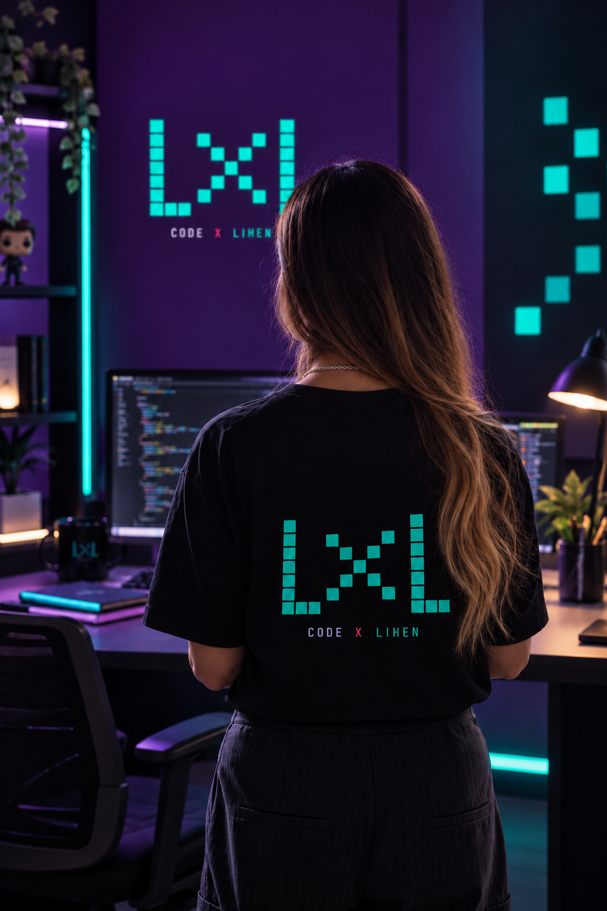

IMAGEN + IDENTIDAD
EN PROCESO
SOBRE MÍ / LXL
MI HISTORIA & CÓDIGO
Mi historia.
Aporto experiencia en gestión de proyectos, análisis, seguimiento y resolución de problemas, desarrollada en el sector de telecomunicaciones.
Fortalezco mi perfil como Junior Full-Stack Java Developer desarrollando proyectos con Java, Spring Boot, MySQL, HTML, CSS y JavaScript.
Como cofundadora de LIHEN.CO complemento mi perfil tecnológico con una visión de marca, usuario y construcción de soluciones digitales.
Integro experiencia operativa y desarrollo de software para crear soluciones claras, funcionales y orientadas al usuario.
Acta non verba, con propósito.
Ideas que se convierten en soluciones digitales reales.
PROCESO
Experiencia + desarrollo
ANÁLISIS
ORGANIZACIÓN
CODIGO
SOLUCIONES
IDENTIDAD
Tecnología + usuario
DISEÑO
USUARIO
EXPERIENCIA
TECNOLOGÍA
HUELLAVET
Sistema web para agendar y gestionar servicios veterinarios.
Languages
Cargando GitHub…
PLANIFICADOR
DE TAREAS WEB
Aplicación web para crear, organizar y gestionar tareas.
Languages
Cargando GitHub…


CONTACTO / LXL
CONECTEMOS & CODE
IDEAS +
CÓDIGO
LXL
CODE X LIHEN

GITHUB
Código y proyectos
Repositorios, prácticas y proyectos desarrollados durante mi proceso de formación.
Ver GitHubPerfil profesional
Formación, experiencia y evolución profesional en mi transición hacia desarrollo de software.
Conectar en LinkedIn